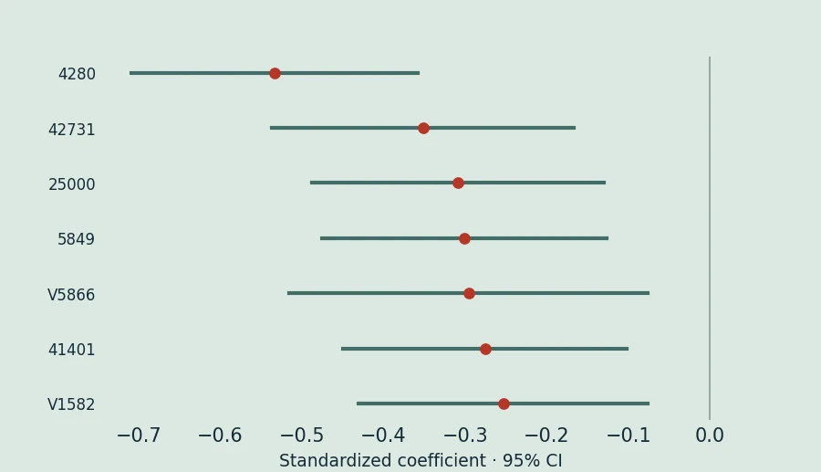
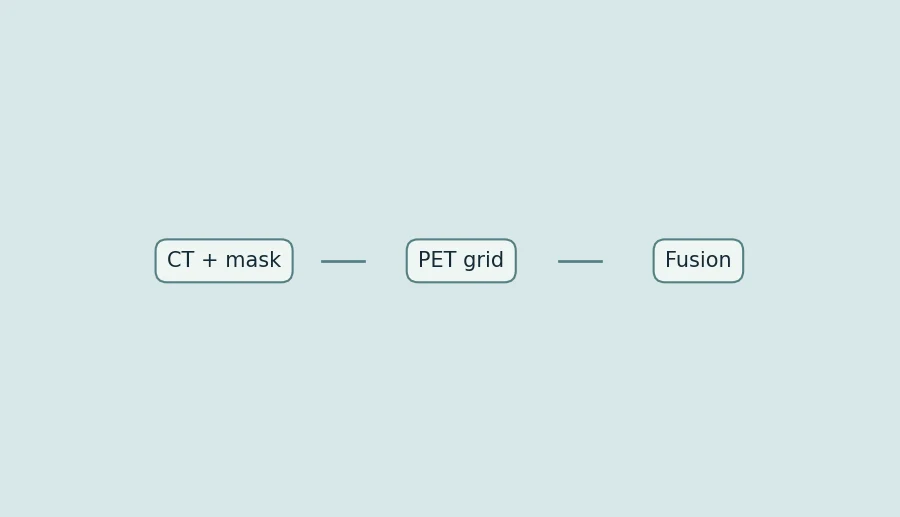
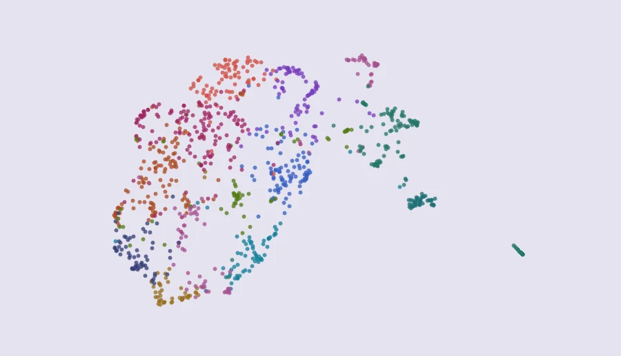
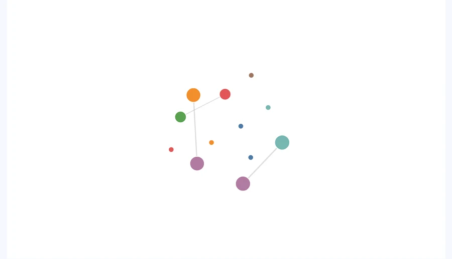
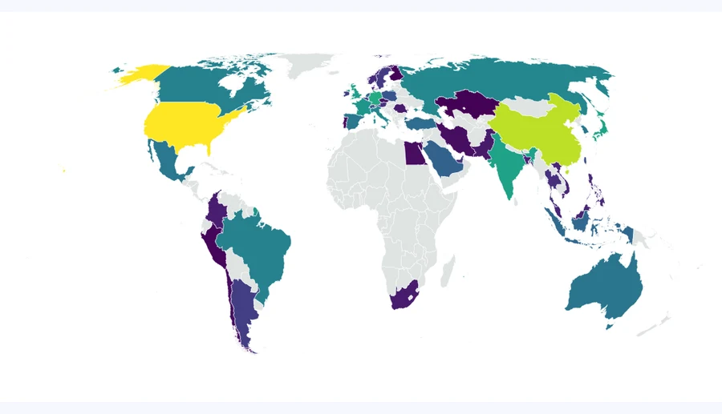

Hi, I’m Jo.
I’m Yuxuan Zhou, a Data Science student in the Duke Kunshan University and Duke University dual-degree program. I have a 3.77/4.0 GPA and earned Dean’s List with Distinction.
My experience spans clinical data research and healthcare consulting at IQVIA.
I want to become a healthcare data scientist, building clinical AI tools and testing whether they help clinicians make decisions.
Outside of school and research, I enjoy baseball and karaoke.
Selected projects
Biomedical Data Science
I start with signals and images, then compare my outputs with clinician annotations or use the features to study clinical associations. These projects span ECG peak detection, ECG–ICD analysis, and PET/CT lesion segmentation.

Clinical statistics
ECG–ICD association analysis
Tested how ECG features vary with recorded diagnoses.

Signal processing
ECG waveform detection
Automatically annotated P, R, and T peaks in ECG signals.

Medical imaging
PET/CT spatial alignment
Resampled CT and an existing lesion mask onto the PET voxel grid.
Beyond Healthcare
I use interactive visualization to explore patterns in text, networks, and geography. I also use statistical models to study financial time series.
STATS 401 · Interactive Visualization

Lab 8 · Text
Mapping a university bulletin
Turned a university bulletin into an interactive map of related passages.

Lab 7 · Networks
Temporal commercial network
Built a time slider and playback to explore 60 days of company transactions.

Lab 9 · Geography
Mapping the global economy
Built a linked map and cartogram to compare GDP across 50 economies.